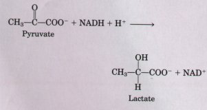
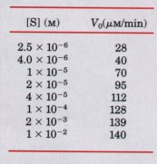
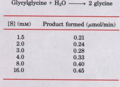
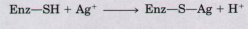
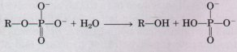
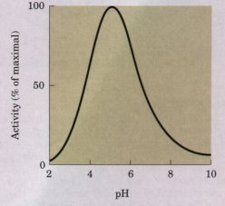
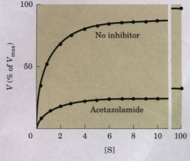

Virtually every biochemical reaction is catalyzed by enzymes. With the exception of a few catalytic RNAs, all known enzymes are proteins. Enzymes are extraordinarily effective catalysts, commonly producing reaction rate enhancements of 107 to 1014. To be active, some enzymes require a chemical cofactor, which can be loosely or tightly bound. Each enzyme is classified according to the specific reaction it catalyzes.
Enzyme-catalyzed reactions are characterized by the formation of a complex between substrate and enzyme (an ES complex). The binding occurs in a pocket on the enzyme called the active site. The function of enzymes and other catalysts is to lower the activation energy for the reaction and thereby enhance the reaction rate. The equilibrium of a reaction is unaffected by the enzyme.
The energy used for enzymatic rate enhancements is derived from weak interactions (hydrogen bonds and van der Waals, hydrophobic, and ionic interactions) between the substrate and enzyme. The enzyme active site is structured so that many of these weak interactions occur only in the reaction transition state, thus stabilizing the transition state. The energy available from the numerous weak interactions between enzyme and substrate (the binding energy) is substantial and can generally account for observed rate enhancements. The need for multiple interactions is one reason for the large size of enzymes. Binding energy can be used to lower substrate entropy, to strain the substrate, or to cause a conformational change in the enzyme (induced fit). This same binding energy accounts for the exquisite specificity exhibited by enzymes for their substrates. Other catalytic mechanisms include general acid-base catalysis and covalent catalysis. Details of the reaction mechanisms have been worked out for many enzymes.
Kinetics is an important method for the study of enzyme mechanisms. Most enzymes have some common kinetic properties. As the concentration of the substrate is increased, the catalytic activity of a fixed concentration of an enzyme will increase in a hyperbolic fashion to approach a characteristic maximum rate Vmax, at which essentially all the enzyme is in the form of the ES complex. The substrate concentration giving one-half Vmax is the Michaelis-Menten constant Km, which is characteristic for each enzyme acting on a given substrate. The Michaelis-Menten equation
V0=Vmax[S]/(Km+[S])
relates the initial velocity of an enzymatic reaction to the substrate concentration and Vmax through the constant Km. Both Km and Vmax can be measured; they have different meanings for different enzymes. The limiting rate of an enzyme-catalyzed reaction at saturation is described by the constant kcat, also called the turnover number. The ratio Kcat/Km provides a good measure of catalytic efficiency. The Michaelis-Menten equation is also applicable to bisubstrate reactions, which occur by either ternary complex or double-displacement (ping-pong) pathways. Each enzyme has an optimum pH, as well as a characteristic specificity for the substrates on which it acts.
Enzymes can be inactivated by irreversible modification of a functional group essential for catalytic activity. They can also be reversibly inhibited, competitively or noncompetitively. Competitive inhibitors compete reversibly with the substrate for binding to the active site, but they are not transformed by the enzyme. Noncompetitive inhibitors bind to some other site on the free enzyme or to the ES complex.
Some enzymes regulate the rate of metabolic pathways in cells. In feedback inhibition, the end product of a pathway inhibits the first enzyme of that pathway. The activity of some regulatory enzymes, called allosteric enzymes, is adjusted by reversible, noncovalent binding of a specific modulator to a regulatory or allosteric site. Such modulators may be inhibitory or stimulatory and may be either the substrate itself or some other metabolite. The kinetic behavior of allosteric enzymes reflects cooperative interactions among the enzyme subunits. Other regulatory enzymes are modulated by covalent modification of a specific functional group necessary for activity, or by proteolytic cleavage of a zymogen.
Evolution of Catalytic Function. (1987) Cold Spring Harb. Symp. Quant. Biol. 52.
A collection of excellent papers on many topics discussed in this chapter.
Fersht, A. (1985) Enzyme Structure and Mechanism, W.H. Freeman and Company, New York.
A clearly written, concise introduction. More aduanced.
Friedmann, H. (ed) (1981) Bench.mark Papers in Biochemistry, Vol. i: Enzymes, Hutchinson Ross Publishing Company, Stroudsburg, PA.
A collection of classic papers in enzyme chemistry, with historical commentaries by the editor. Extremely interesting.
Jencks, W.P. (1987) Catalysis in Chemistry and Enzymology, Dover Publications, Inc., New York.
A new printing of an outstanding book on the subject. More aduanced.
Principles of CatalysisHansen, D.E. and Raines, R.T. (1990) Binding energy and enzymatic catalysis. J. Chem. Educ. 67, 483-489.
A good place for the beginning student to acquire a better understanding of principles.
Jencks, W.P. (1975) Binding energy, specificity, and enzymic catalysis: the Circe effect. Adv. Enzymol. 43, 219-410.
Kraut, J. (1988) How do enzymes work? Science 242, 533-540.
Lerner, R.A., Benkovic, S.J.,& Schulz, P.G. (1991) At the crossroads of chemistry and immunology: catalytic antibodies. Science 252, 659-667.
Schultz, P.G. (1988) The interplay between chemistry and biology in the design of enzymatic catalysts. Science 240, 426-433.
KineticsCleland, W.W. (1977) Determining the chemical mechanisms of enzyme-catalyzed reactions by kinetic studies. Adu. Enzymol. 45, 273-387. Raines, R. T.& Hansen, D.E. (1988) An intuitive approach to steady-state kinetics. J. Chem. Educ. 65, 757-759.
Segel, I.H. (1975) Enzyme Kinetics: Behauior and Analysis of Ilapid Equilibrium and Steady State Enzyme Systems, John Wiley & Sons, Inc., New York.
A more aduanced treatment.
Anderson, C.M., Zucker, F.H.,& Steitz, T.A. (1979) Space-filling models of kinase clefts and conformation changes. Science 204, 375-380.
Structure of hexokinase and other enzymes utilizing ATP.
Fersht, A.R. (1987) Dissection of the structure and activity of the tyrosyl-tRNA synthetase by sitedirected mutagenesis. Biochemistry 26, 80318037.
Warshel, A., Naray-Szabo, G., Sussman, F.,& Hwang, J.-K. (1989) How do serine proteases really work? Biochemistry 28, 3629-3637.
Dische, Z. (1976) The discovery of feedback inhibition. Z5-ends Biochem. Sci. l, 269-270. Koshland, D.E., Jr.& Neet, K.E. (1968) The catalytic and regulatory properties of enzymes. Annu. Rev. Biochem. 37, 359-410.
Monod, J., Changeux, J.-P. & Jacob, F. (1963) Allosteric proteins and cellular control systems. J. Mol. Biol. 6, 306-329.
A classic paper introducing the concept of allosteric regulation.
1. Keeping the Sweet Taste of Corn The sweet taste of freshly picked corn is due to the high level of sugar in the kernels. Store-bought corn (several days after picking) is not as sweet, because about 50% of the free sugar of corn is converted into starch within one day of picking. To preserve the sweetness of fresh corn, the husked ears are immersed in boiling water for a few minutes ("blanched") and then cooled in cold water. Corn processed in this way and stored in a freezer maintains its sweetness. What is the biochemical basis for this procedure?
2. Intracellular Concentration of Enzymes To approximate the actual concentration of enzymes in a bacterial cell, assume that the cell contains 1,000 different enzymes in solution in the cytosol, that each protein has a molecular weight of 100,000, and that all 1,000 enzymes are present in equal concentrations. Assume that the bacterial cell is a cylinder (diameter 1μm, height 2.0μm). If the cytosol (specific gravity 1.20) is 20% soluble protein by weight, and if the soluble protein consists entirely of different enzymes, calculate the average molar concentration of each enzyme in this hypothetical cell.
3. Rate Enhancement by Urease The enzyme urease enhances the rate of urea hydrolysis at pH 8.0 and 20 ? by a factor of 1014. If a given quantity of urease can completely hydrolyze a given quantity of urea in 5 min at 20°C and pH 8.0, how long will it take for this amount of urea to be hydrolyzed under the same conditions in the absence of urease? Assume that both reactions take place in sterile systems so that bacteria cannot attack the urea.
4. Requirements of Actiue Sites in Enzymes The active site of an enzyme usually consists of a pocket on the enzyme surface lined with the amino acid side chains necessary to bind the substrate and catalyze its chemical transformation. Carboxypeptidase, which sequentially removes the carboxyl-terminal amino acid residues from its peptide substrates, consists of a single chain of 307 amino acids. The two essential catalytic groups in the active site are furnished by Argl45 and Glu270.
(a) If the carboxypeptidase chain were a perfect a helix, how far apart (in nanometers) would Arg145 and Glu270 be? (Hint: See Fig. 7-6.)
(b) Explain how it is that these two amino acids, so distantly separated in the sequence, can catalyze a reaction occurring in the space of a few tenths of a nanometer.
(c) If only these two catalytic groups are involved in the mechanism of hydrolysis, why is it necessary for the enzyme to contain such a large number of amino acid residues?
5. Quantitative Assay for Lactate Dehydrogenase The muscle enzyme lactate dehydrogenase catalyzes the reaction

NADH and NAD+ are the reduced and oxidized forms, respectively, of the coenzyme NAD. Solutions of NADH, but not NAD+, absorb light at 340 nm. This property is used to determine the concentration of NADH in solution by measuring spectrophotometrically the amount of light absorbed at 340 nm by the solution. Explain how these properties of NADH can be used to design a quantitative assay for lactate dehydrogenase.
6. Estimation of Vm and Km, by Inspection Although graphical methods are available for accurate determination of the values of Vmax and Km of an enzyme-catalyzed reaction (see Box 8-1), these values can be quickly estimated by inspecting values of V0 at increasing [S]. Estimate the approximate value of Vmax and Km for the enzyme-catalyzed reaction for which the following data were obtained:

7. Relation between Reaction Velocity and Substrate Concentration: Michaelis-Menten Equation
(a) At what substrate concentration will an enzyme having a kcat of 30 s-l and a Km of 0.005 M show one-quarter of its maximum rate?
(b) Determine the fraction of Vmax that would be found in each case when [S] = 1/2Km, 2Km, and l0Km.
8. Graphical Analysis of Vmax and Km Values The following experimental data were collected during a study of the catalytic activity of an intestinal peptidase capable of hydrolyzing the dipeptide glycylglycine:

From these data determine by graphical analysis (see Box 8-1) the values of Km and Vmax for this enzyme preparation and substrate.
9. The Turnouer Number of Carbonic Anhydrase Carbonic anhydrase of erythrocytes (Mr 30,000) is among the most active of known enzymes. It catalyzes the reversible hydration of CO2:
H2O+ CO2 ====H2CO3
which is important in the transport of CO2 from the tissues to the lungs.
(a) If 10μg of pure carbonic anhydrase catalyzes the hydration of 0.30 g of CO2 in 1 min at 37°C under optimal conditions, what is the turnover number (kcat) of carbonic anhydrase (in units of min-l)?
(b) From the answer in (a), calculate the activation energy of the enzyme-catalyzed reaction (in kJ/mol).
(c)If carbonic anhydrase provides a rate enhancement of 107, what is the activation energy for the uncatalyzed reaction?
l0.Irreuersible Inhibition of an Enzyme Many enzymes are inhibited irreversibly by heavy-metal ions such as Hg2+, Cu2+, or Ag+, which can react with essential sulfhydryl groups to form mercaptides:

The affinity of Ag+ for sulfhydryl groups is so great that Ag+ can be used to titrate -SH groups quantitatively. To 10 mL of a solution containing 1.0 mg/ mL of a pure enzyme was added just enough AgNO3 to completely inactivate the enzyme. A total of 0.342 μmol of AgNO3 was required. Calculate the minimum molecular weight of the enzyme. Why does the value obtained in this way give only the minimum molecular weight?
11. Protection of an Enzyme against Denaturation by Heat When enzyme solutions are heated, there is a progressive loss of catalytic activity with time. This loss is the result of the unfolding of the native enzyme molecule to a randomly coiled conformation, because of its increased thermal energy. A solution of the enzyme hexokinase incubated at 45°C lost 50% of its activity in 12 min, but when hexokinase was incubated at 45°C in the presence of a very large concentration of one of its substrates, it lost only 3% of its activity. Explain why thermal denaturation of hexokinase was retarded in the presence of one of its substrates.
12. Clinical Application of Differential Enzyme Inhibition Human blood serum contains a class of enzymes known as acid phosphatases, which hydrolyze biological phosphate esters under slightly acidic conditions (pH 5.0):

Acid phosphatases are produced by erythrocytes, the liver, kidney, spleen, and prostate gland. The enzyme from the prostate gland is clinically important because an increased activity in the blood is frequently an indication of cancer of the prostate gland. The phosphatase from the prostate gland is strongly inhibited by the tartrate ion, but acid phosphatases from other tissues are not. How can this information be used to develop a specific procedure for measuring the activity of the acid phosphatase of the prostate gland in human blood serum?
13. Inhibition of Carbonic Anhydrase by Acetazolamide Carbonic anhydrase is strongly inhibited by the drug acetazolamide, which is used as a diuretic (increases the production of urine) and to treat glaucoma (reduces excessively high pressure within the eyeball). Carbonic anhydrase plays an important role in these and other secretory processes, because it participates in regulating the pH and bicarbonate content of a number of body fluids. The experimental curve of reaction velocity (given here as percentage of Vmax) versus [S] for the carbonic anhydrase reaction is illustrated below (upper curve). When the experiment is repeated in the presence of acetazolamide, the lower curve is obtained. From an inspection of the curves and your knowledge of the kinetic properties of competitive and noncompetitive enzyme inhibitors, determine the nature of the inhibition by acetazolamide. Explain.

14. pH Optimum of Lysozyme The enzymatic activity of lysozyme is optimal at pH 5.2.

The active site of lysozyme contains two amino acid residues essential for catalysis: GIu35 and Asp52. The pKa values of the carboxyl side chains of these two residues are 5.9 and 4.5, respectively. What is the ionization state (protonated or deprotonated) of each residue at the pH optimum of lysozyme? How can the ionization states of these two amino acid residues explain the pH-activity profile of lysozyme shown above?